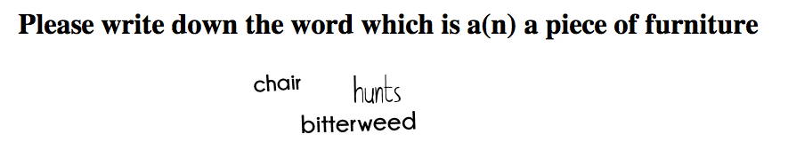

Why should I use Smartcaptcha?
There are two kind of people on your website. People who can't read your captcha, and spambots.
This is not the way it should be. Users shouldn't be bothered by a difficult task like making something useful out of a recaptcha image,
and spambots should be kept away from your service by a good turing test.
This sounds really difficult, but it's not. It's because
spambots aren't smart. For them carrots aren't a vegetable. Carrots is a string out of 7 characters.
By using the fact that humans are smart, this open source project made a captcha task which is impossible for bots, and almost too easy for a user.
Really? Let me see!
This example is without all the extra security features. Most of the time this is save enough.
But if you really care about no spambot ever coming in again, you could use something like this. Translated in english: Which of the following is a piece of furniture? Covering, crumbled or table? The answer is ... table!

Pfff.. this will take me another 2 hours to istall
No it doesn't! Smartcaptcha is made by smart people just like you who really don't have the time to make something out of nothing. You can just copy-paste the code below, change some things, and you're up and running!
Create a new captcha image in your form page:
// Include the Simple-captcha class
require( "scaptcha/scaptcha.inc.php" );
// Load the image...
$captcha = new SmartCaptcha();
$img = $captcha->draw();
// Just load some more data...
$answer = $captcha->getCheckText();
$question = $captcha->getQuestion();
You can now just use $img as a base64 image file in your code and $question as the associated captcha question.
<h4><?php echo $question;?></h4>
<img src="data:image/png;base64,<?php echo $img?>" alt="Captcha image" />
In the other page, where you want to check if the image is filled in correctly you can use the $_SESSION['secretword'] where the correct answer is stored. It's simple as that!
Still not clear? Don't bother. If you download the archive you will find a working example with everything you need in the demo/ directory.
Questions?
Which browsers do you support?
Every important browser is supported. Only IE6 doesn't support base64-images, but there is a workaroud if you really want to support IE6.
In which lanugages is this available?
We have a default dataset in English and Dutch, but it's fairly easy to create one yourself. If you do so please contact me so other people can use it too.
What has to be done for a first release?
There are a few big things which have to be done before a (beta-)release.
- Add a good amount of data in dutch and english.
- Make it easy to implement. We want to get rid of most of the work for you.
- Good and clear documentation; which settings do you have and how do you use them.
- Some working examples in the
demo/directory.
And for a full release we would really like to add:
- Plugin-support for big open source software like phpbb. Just install a simple plugin and Smartcaptcha is fully working.
Docs & Settings
Real documentation for the different settings. Most of the people will prefer looking through the examples in demo/ though.
draw bool $encode (dflt. true)
This functions draws the final image. With $encode on true it will give you a base64 string which you can directly use in your HTML page,
on false it will return the image itself with an PNG-header so it can only be used externally in a webpage.
Loading it external is a little more difficult to implement because you also want to get the corresponding question with
the image in the HTML-page. An advantage of loading it externally is the IE6-support.
Usage
The following example wil return an image inline and can be used inline.
<img src="data:image/png;base64,<?php $captcha = new SmartCaptcha();
$captcha->draw( true ); ?>" alt="Captcha" />
This example must be included directly in the HTML-file by placing a link to the PHP file in the img-src attribute.
<?php $captcha = new SmartCaptcha();
$captcha->draw( false ); ?>
setSize int $width (dflt. false), int $height (dflt. false)
This will change the size of the result-image. Method should be called before $captcha->draw();.
Will take an int (size in px.) if the width/height should be changed, or false if it should stay the same.
The default size of a Smartcaptcha image is 110 by 330px. It is not recommended to go lower then 90 by 250px.
Usage
The following example will keep the image his width at default value, and will change the height to 300px.
<?php
$captcha = new SmartCaptcha;
$captcha->setSize( false, 300 );
$captcha->draw();?>
setBgPlainColor int $r, int $g, int $b
This function will change the backgroundcolor to a plain color specified by this method. If not specified Smartcaptcha will use a random background. This method needs three arguments. The R, G and B value of the color, in that order.
Usage
The following example will change the backgroundcolor to black.
<?php
$captcha = new SmartCaptcha;
$captcha->setBgPlainColor( 0 , 0 , 0 );
$captcha->draw();?>
setBgPlainColorFromHex string $hex
This method will change the backgroundcolor to a plain color specified by this method. If not specified Smartcaptcha will use a random background.
This method needs a valid full hex colorcode as an argument. This colorcode can be given with or without hash (#).
A HTML-shortcode like #000 will not work.
Usage
The following example will change the backgroundcolor to black.
<?php
$captcha = new SmartCaptcha;
$captcha->setBgPlainColorFromHex( "#000000" );
$captcha->draw();?>
getBgPlainColor
Will return the bg plain color in the form in an array with the r, g and b value.
setAmoundDummyWords int $amount
How many words will be shown in the image apart from the answer to the security question. The recommended value for this function is 2.
setLanguage string $langcode
Set the language for the security question. Accepted values are language-shortcodes.
Supported languages
- NL - Nederlands, Dutch
- EN - English, English
saveDataInSession bool $bool
Don't create a new captcha image at every reload but save the data in a session. Default value is true.
setAchtergrondRuis bool $bool
If true this will create random lines and circles throughout the image. The default value of achtergrondRuis is true.
setVoorgrondRuis bool $bool
If true this will create random lines and circles throughout the image. The default value of voorgrondRuis is the same as the plainBackgroundColor. This noise will be made on top of the text.
setTextShadow bool $bool
Enable or disable a show for the texts in the captcha-image.